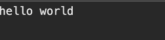

Next.js에서 Component는 Client Component와 Server Component로 구분한다.
Client Component
Next.js에서 의미하는 Client Component는 React의 Client Component와 동일하다.
즉, React에서의 Component를 Next.js 환경에서 Client Component라고 칭한다.
Client Component를 생성하는 방법은 최상단에 'use client'라는 문구를 넣어 주기만 하면 된다.
다음 예제 코드는 Client Component 형태로 Hello Component를 정의한 뒤
Hello! Button을 클릭하면 브라우저 콘솔에 Hello World!를 출력하는 React 예제 코드이다.
'use client';
import { useState } from 'react';
export default function Hello() {
const [clicked, setClicked] = useState(false);
return (
<button
onClick={() => {
console.log('hello world');
setClicked(true);
}}
>
{clicked ? 'Clicked!' : 'Hello!'}
</button>
);
}
Server Component
Server Component는 기본적으로 Next.js에서 Component를 생성하면 설정되는 기본값이다.
따라서 별도의 문구를 표기할 필요 없이 Component를 정의만 해주면 자동으로 Server Component로 생성된다.
단, Server Component를 사용하는 경우 Client Component와 달리 JSX 태그 내부에 onClick과 같은 JavaScript 코드를 포함하거나, React의 useState 같은 Hook을 사용할 수 없다.
export default function ServerComponent() {
return (
<div>
"Hello World!"
</div>
);
}
Client Component vs Server Component
Client Component
- 브라우저 (클라이언트) 에서 실행된다.
... 실행 위치가 클라이언트이기에 검색엔진이 HTML 코드를 읽어 들이는데 불리하기에 SEO 측면에서 좋지 않다.
... 하지만 렌더링이 더 부드럽기에 사용자 경험을 향상시킬 수 있다.
- Component 내부에 JS Code를 사용 가능하다.
- 코드 상단에 use client를 명시해 주어야 한다.
Server Component
- 서버에서 실행된다.
... 실행 위치가 서버이기에 SEO 측면에서 유리하다. (HTML 코드를 서버에서 모두 생성한 뒤 브라우저로 뿌려주기 때문)
- Component 내부에 JS Code를 작성할 수 없다.
... React Hooks (useState, useEffect ...) 을 사용 불가능하다.
- 별도의 문구를 명시해 주지 않더라도 자동으로 Server Component로 생성된다.
사용 전략
대부분의 웹사이트는 SEO가 중요하기에 전체적인 틀은 Server Component로 작성한 뒤, 버튼, 입력창, 폼과 같은 사용자 경험이 중요한 최소한의 컴포넌트만 클라이언트 컴포넌트로 작성한다.
DB에서 데이터를 읽고 보여주는 기능, 혹은 인증 쿠키를 기반으로 서버에서 동작해야하는 기능 등은 Server Component로 제작하여 읽고 쓰는 성능을 향상하는 것이 중요하다.